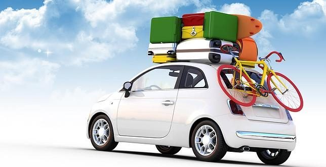

Prota: Coge todo lo que necesites, sin miedo.
Héctor: Hay ciertas cosas que necesito y que no puedo coger de aquí...
Prota: Entiendo jeje cogemos rápido todo lo que podamos de aquí y despues vamos a tu casa, tranquilo.
Héctor: ¡Perfecto!
Llegáis a casa de Héctor.
Héctor: Baja conmigo y coge también todo lo que creas que vamos a necesitar, aun que ya lo hayamos cogido,
mejor que sobre y que no falte
Prota: Vale, aun que me sabe un poco mal...
Héctor: No te preocupes, ahora somos un equipo. Te
dice sonriendo
Héctor: Mi hermano es miembro del equipo 'Amigos del tiro' y le permiten llevar un arma, nos la
llevamos.
Prota: ¿Crees que la vamos a necesitar...? Dices
asustada
Héctor: Pues no lo sé... pero nunca está de más cogerla por si a caso...
Prota: Vale, pues nos la llevamos... ¡pero la llevas tu!
Héctor: De acuerdo, la llevo yo jaja
